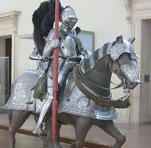

|
|
|
第十三章 アーサー王
ガヴァーンは疲労と傷のために、昼を過ぎてもまだ眠っていた。目覚めたのは夕刻だった。体中が痛んだ。全身の打撲と切り傷のために、どこが痛いのかさえわからなかった。痛む体を起こして、今日やらなければならない二つのことを考えた。
一つは、捕虜にしているリショイスとトルコイテを自由にして、オルゲルーゼに引き合わせることだが、これは簡単なことだ。三人とも喜ぶだろう。オルゲルーゼの喜ぶ顔を想像して、ガヴァーンも嬉しくなった。
もう一つは、グラモフランツからあずかってきた指輪を、イトニエーに渡して話をしなければならない。グラモフランツの愛の伝令役を務めるのだ。これは、周囲の人々に配慮して、注意深く話さなければならない。ガヴァーンはイトニエーに語るセリフをあらかじめ考えておいた。
ガヴァーンは着がえると、さっそくリショイスとトルコイテを呼び出した。呼び出された二人は、理由を聞いていなかったので、緊張した表情であらわれた。ガヴァーンは二人に上等な服を手渡しながら言った。
「無罪放免だ。これから、この服に着がえて、あなた方の主君オルゲルーゼに会いに行く。」
これを聞いて、二人は大喜びした。
「本当ですか。」
「許していただけるのですか。」
ガヴァーンは笑顔で答えた。
「本当だ。あなた方は許されたのだ。久しぶりの自由を味わうがいい。」
二人は再び大喜びし、そそくさと着がえ、ガヴァーンに連れられて、宮殿に向かっていった。
宮殿は両翼にわかれていて、片方の側には、騎士たちが、もう一方の側には女性たちがいた。
クリンショルの命令によって、宮殿の中では、男女は別々に棲み分けられていて、お互いに話すこともできなかった。ガヴァーンは、この棲み分けを解除した。
ガヴァーンはオルゲルーゼを見つけて、リショイスとトルコイテを引き合わせた。オルゲルーゼは自由の身になった二人を見て喜んだ。そしてガヴァーンの前に進みでて、心から感謝の言葉を述べた。
「ありがとうございます。さすがに心の広いお方ですこと。感謝いたします。」
「どういたしまして。あなたが喜ぶことでしたら、何でもいたします。どうぞ二人とゆっくり話しでもしてください。」
「そうさせていただきます。」
次に、ガヴァーンはベーネを見つけて尋ねた。
「イトニエーと話がしたいのだが、どなたがイトニエーですか。」
ベーネは指をさして教えてくれた。
「あの褐色の髪の毛をした方です。二人でお話されるなら、礼儀正しくしてください。」
ベーネはイトニエーがグラモフランツへの愛を暖めていることを知っていたので、それが壊れることのないように配慮したのだ。
ガヴァーンは言った。
よく心得ております。」
ガヴァーンは、イトニエーに近づき、グラモフランツとの約束をはたそうとした。ことをうまく運ぶために、杓子定規にならないように気をつけて、慎重に話しかけた。
「イトニエー様ですか。」
「はい。さようです。」
「ずいぶんと、若く美しくいらっしゃるので、きっと今までに、たくさんの愛を受けとられてきたことでしょう。」
「なぜ、そんなことをおっしゃるのですか。私は騎士の方とお話するのは、今日が初めてです。」
「でも聞いたことはあるでしょう。騎士が愛を勝ちとるために一騎討ちをして、女性に仕えようとすることは、ご存知でしょう。」
「私自身はまだ知りません。ただ、ローグロイスの公妃オルゲルーゼ様のもとに、たくさんの騎士がいらっしゃって、目の前で一騎討ちをされるのを見たことはあります。ただ、あなたのように戦いに勝って、ここまで来られた方はいません。あなたが初めてです。」
ガヴァーンはグラモフランツを話題に出そうとして、質問の舵をきった。
「公妃の軍勢は、いったい誰に対して戦いを挑んでいるのですか。」
「それはグラモフランツ王です。高い栄誉の冠をいただいている方らしいですが、それ以上は知りません。」
「グラモフランツ王ですか。実は王のことでお話があるのです。王はあなたの愛がほしいと言っておられます。あなたの愛を得るためにこれまでがんばってきた、と本人の口から聞きました。王はあなたのことを思って苦しんでいられます。どうか苦しみを取りのぞいてあげてください。ここに王からの贈り物の指輪がございます。どうかこれを受けとってください。」
イトニエーは顔を真っ赤にして、指輪を受けとった。
「わかりました。私が心からお慕いしているあの方のもとからいらしたのですね。どうか、内密にしていただきたいのですが、私はあの方に愛をささげたいと心に決めています。私がこの城から抜けだせていたら、とっくに王のおそばにいることと思います。先ほど私はオルゲルーゼ様とあいさつのキスを交わしました。それは私にとって、屈辱のキスでした。グラモフランツ王に敵意をいだき、殺そうとしてつけねらっている人にキスをしなければならないなんて。私の心は傷つきました。私はオルゲルーゼ様を許すことはできません。
あなたはオルゲルーゼ様にお仕えされている騎士ですが、私は今、ここであなたにおすがりするしかありません。神があなたに知恵を授け、私たちを幸せにしてくださることを祈ります。あの方は誰よりも私を愛してくださっていると思います。私もあの方に愛をささげるつもりです。でも、どうかこのことは、私の母にも、妹のクンドリーにも黙っていてください。」
ガヴァーンは答えた。
「私は喜んでお手伝いいたします。どんなことでもいたします。そのために、どうすればよいですか。」
「お任せします。できることがあれば、グラモフランツ王と私に何なりとお申し付けください。二人の愛をお守りください。あの方に愛をささげることが私の願いです。」
「承知しました。約束しましょう。」
ガヴァーンがこう言うと、イトニエーは周囲の人に気づかれないように、感謝の気持ちを伝えた。
ガヴァーンは、イトニエーがグラモフランツを愛し、それと同時にオルゲルーゼに敵意をいだいていることがわかり、これは容易なことではないと思った。自分が一騎討ちをする相手を愛し、自分が愛する女性を憎んでいるのだから、イトニエーから敵意を向けられても無理はない。二人の関係は、ガラス細工のようにもろい関係になっていた。そこへ自分がイトニエーの兄であることを明かせば、関係はより複雑なものになる。ガヴァーンはことがこじれるのを避けて、自分が兄であり、二人の父はロート王、母はザンギーヴェであることは言わなかった。
数日後の早朝、空が白みかけたころ、アーサー王の妃ギノヴェーアは、礼拝堂でお祈りをしていた。そこへガヴァーンの手紙をもった小姓が近づいてきて、手紙をさし出した。ギノヴェーアは手紙を受けとると、手紙に書かれた筆跡を見て、送り主が誰だかわかった。ギノヴェーアは涙を流しながら言った。
「あぁ、変わりなく生きているのね。あなたが心配でしかたがありません。」
ギノヴェーアは小姓に向かって言った。
「お前はガヴァーンの使いですね。」
「はい。女王様。私の主君は、あなたへの敬意をお伝えするように、と言っていました。それから、主君は今、苦境に立たされています。女王様の応援がいただきたいとのことです。どうぞ、お手紙を読んでいただけましたら、おわかりになるかと思います。」
ギノヴェーアは手紙を読んで言った。
「なぜお前が私のもとに使わされたのかがわかりました。大勢の女性を連れてガヴァーンのもとへ出かけ、できる限りの役目をはたしましょう。立派で美しい婦人を連れてまいります。
あの日、プリミツェールの河畔で、ガヴァーンはアスカルーンに向かって旅立ち、パルシファルは聖杯を求めて旅立ちました。あれ以来、四年半と六週間がたっています。その間、私の心は悲しみでいっぱいでした。ガヴァーンはどこにいるのですか。」
「申し訳ありません。主君の居場所は申し上げられません。しかし、女王様が出向いてくださることを知れば、主君は喜ばれると思います。」
「わかりました。それでは、ここから出ていったら、日が昇るのを待って、王のところへ行きなさい。騎士がたくさん集まっているでしょうが、かまわずに、堂々と馬を下りて、王に手紙を渡しなさい。主君を思うなら、はっきりとした口調で、上手に頼みなさい。」
「ありがとうございます。」
小姓は去っていった。
数時間後、小姓は大勢の騎士の間を通りぬけて、アーサー王のご前に進みでた。
アーサー王は声をかけた。
「使いのものか。どこからの使いだ。」
「はい。主君ガヴァーンからの使いです。どうぞ手紙をお読みください。」
アーサー王は手紙を読んで、強く心を打たれた。
「なんと幸福な日だ。愛する高貴な妹の息子から知らせが届いた。
一族のために力を貸すことは当然のことだ。ガヴァーンの頼みはできるだけかなえてやろう。ガヴァーンは元気でいるのか。」
「はい。王様。王様のお気持ちひとつで、主君は幸せになられることと思います。王様の応援が主君に喜びをもたらします。主君をお見捨てにならなければ、主君は栄誉を得て、心の痛みは消えてしまうでしょう。主君は王様ご一同の旅立ちを望んでおります。」
アーサー王は言った。
「お前。この手紙を女王に読んでいただき、ご婦人方にも知らせるように頼んでくれ。それにしても、あのグラモフランツは、わが一族にこれほどまでのことをするとは、無礼極まりない。手痛い目にあわせて、正しい作法を教えてやろう。」
小姓はギノヴェーア王妃のもとに行き、再び手紙を渡した。王妃は婦人たちを集めて、手紙を読んで聞かせた。婦人たちは心を動かされ、目に涙をうかべ、口々にヨーフランツェへの旅の同行を申しでた。
円卓には、新しい事件の知らせがあった時にだけ、円卓を設けるという掟がある。アーサー王は、ガヴァーンからの手紙を受けとったので、この掟にしたがい円卓を設け、騎士たちとともに食事をした。騎士たちは、心から喜んで円卓を祝った。
小姓はギノヴェーアに言った。
「女王様。私は主君のもとに、すぐに戻らなければなりません。主君のことは、どうかよろしくお取りはからいください。」
ギノヴェーアは言った。
「もちろんです。私たちは応援に向かいます。そのようにガヴァーンに伝えなさい。」
ギノヴェーアは家来に向かって言った。
「この小姓の世話をしてあげてください。拍車に傷があれば、最高級の拍車を付けておあげなさい。なんでも必要なものはそろえてさしあげなさい。」
こうして小姓は、アーサー王のもとを去り、数日後には、魔法の城に戻った。
小姓は馬を下りて宮殿の中に入ろうとしたところで、アルニーヴェに出くわした。アルニーヴェは毎日、注意して小姓の帰りを待っていたのだ。アルニーヴェは好奇心にかられた様子で、尋ねた。
「どこへ行ってきたのですか。何のために。白状なさい。」
「女王様。それは困ります。申し上げられません。誰にも口外しないと、主君に誓いましたので、それはできません。口外したら、しかられます。どうしてもお知りになりたければ、直接、主君にお尋ねください。」
小姓は、こう言って、ガヴァーンのところに行った。
ガヴァーンは小姓の姿を見ると、立ち上がって出迎えた。
「どうだったんだ。王にお会いできたか。良い返事はもらえたのか。」
小姓は元気よく答えた。
「はい。殿。アーサー王にもギノヴェーア妃にもお会いしました。主君が元気でいられることをお伝えしましたので、皆さん大喜びでした。アーサー王は、ひとつ返事でヨーフランツェへの旅立ちを約束してくださいました。円卓の掟にしたがい、円卓が設けられました。殿の名声は、いたるところで最高の栄冠となって輝いています。」
この言葉を聞いて、ガヴァーンの心配はすっかり消えてなくなった。あとは、アーサー王が軍勢を率いて応援に来てくれることを待つだけだった。
それから数日たったある日、ガヴァーンは上機嫌でアルニーヴェと一緒に時を過ごしていた。ガヴァーンは、アルニーヴェが不思議な話をたくさん知っていると聞いていたので、気にかかっていることを教えてもらいたいと思った。二人は皆のいるところから離れて、窓辺に移動した。ガヴァーンは尋ねた。
「女王様。もしもご迷惑でなければ、女王様にお尋ねしたいことがございます。
私はあなたのおかげでこうして生きています。もしもあなたの手助けがなければ、私はひどい傷と愛の苦しみによって死んでいたでしょう。私はかつて男らしい心を持っていましたが、美しい公妃の魅力に囚われて、恋心に支配されてしまいました。今はあなたのおかげで愛の苦しみはやわらぎ、傷は癒え、こうして元気に生きています。あなたのおかげです。
女王様、お尋ねしたいのですが、なぜ、あの賢者クリンショルが、こんなにひどい魔法をかけたのでしょうか。この不思議な魔法の城についてお聞かせください。」
アルニーヴェは話し始めた。
「クリンショルは多くの国で魔法をかけて、ひどいことをしています。この城にかけられた魔法は、クリンショルの魔法としては、ささやかなものです。
クリンショルはナポリの魔術師ヴィルギリーウスの血を引いています。クリンショルの名誉と名声は高く、誰からも尊敬されていましたが、あるとき事件が起きたのです。
シシリーの王国にイーベルトという王とイーブリエスという王妃がいました。イーブリエス王妃の肢体は、とても美しく、誰もが目を見張るような女性でした。その美しさに魅せられたクリンショルは、妻である身の王妃に愛を申しこみ、見事に口説き落としたのです。しかし、神の目はごまかせません。王妃とクリンショルが愛の交わりをしていることが、イーベルト王の耳に入ったのです。イーベルトは報復に出ました。
この先の話は、女である私がお話するには、大変恥ずかしいことなのでございますが、どうかその点は、お許しいただきとうございます。
イーベルトは怒りを率直に表して、クリンショルの股間を根こそぎ切りとって去勢してしまったのです。」
ガヴァーンは、これを聞いて大笑いした。
「本当ですか。笑い事ではないですが、おもしろい話です。」
「はい、おっしゃる通りで、クリンショルは当時の世の中の笑いものになってしまいました。クリンショルは、王妃と一緒に寝ているところを見つかってしまい、王自らの手で、平らにされてしまいました。王は、そうすることは当然の権利だと思っていたようです。こうしてクリンショルは女性を愛することができなくなってしまい、その遺恨から、魔法を考え出し、魔術を習い、魔術の極意を修めたのです。もはや決して人に親切にしようと思わなくなり、人の不幸を喜ぶようになってしまいました。
ロシェ・ザビーンスのイロート王は魔法にかけられることを恐れて、クリンショルの望むものをすべてさし出しました。クリンショルは、イロートに魔法をかけないという約束をして、それと引き換えに、この堅固な城と周囲十キロメートルの土地を、イロートから譲りうけました。さらにクリンショルは山の上にあのような素晴らしい建物を建てたのです。
しかし、今は、それらはすべてあなたのものです。クリンショルは、かねてからこの城の苦難を切りぬけた者には、和平を申し入れ、自分がもらった贈り物は、すべて引き渡すと公言していたからです。彼は約束という点では、信用できる男ですので、もう二度と、ここの財産を要求することはないと思います。
それから、クリンショルは多くの高貴な人々を監禁しました。この城には四百人の乙女と四人の王女、さらに大勢の男女が囚われの身となっています。どうかこの人たちを故郷に帰してあげてください。寂しさで胸が苦しくなっている人たちに、どうか喜びを与えてあげてください。
そうすれば、あなたの名声は、すぐに世界中に拡がるでしょう。あなたは高貴な騎士です。高貴な人は貧しい人を助けるものです。私も王家の身です。人々の幸せを心から願っています。どうかよろしくお願いいたします。」
ガヴァーンは快く女王の申し入れを承諾した。
「女王様。すぐにでもあなたの喜びの言葉が聞こえるようにいたしましょう。」
ちょうどその時、アルニーヴェの息子であり、ベルターネの人アーサー王が、大きな軍勢を率いて、この城に向かって近づいていた。一族の支援と正義のためにアーサー王の軍勢は、この地を訪れたのである。こちらに向かう街道沿いの野原には、多くの軍旗が立ちならび、明るい色の槍をもった軍勢があふれていた。
ガヴァーンはこの光景を見て、あふれる涙を止められなかった。ガヴァーンは子どものころからアーサー王のもとで養育されたので、二人はほとんど父と息子のような信頼関係を築いていたのだ。
そばにいたアルニーヴェも驚きの表情を見せた。野原に居ならぶ楯と軍旗の紋章は、アルニーヴェには見覚えのあるものだった。それは自軍の紋章だったからだ。
「あなたがうれし涙を流すのはわかります。私も嬉しくて涙を流したいのですが、喜びは笑顔で表したいものです。」
アーサー王の軍勢は川辺の平らな野原を宿営地に決めて、そこにテントを張った。
ガヴァーンはアーサー王の軍勢に対して準備をしようと思い、ベーネに言いつけた。
「渡し守のプリパリノートに伝言を届けてくれ。今日は軍勢が川を渡れないように、渡し舟を岸につなぎ止めて、決してこぎ出さないようにしてほしい。そう頼んでくれ。」
ガヴァーンはさらに、門番には外の門を閉じるように命じた。そして、そばにいる人々に言った。
「向こう岸に大軍が現れた。あのような強力な部隊は見たことがない。彼らが攻撃をしかけてきたときには、援護をお願いしたい。我々は彼らと一戦を交えよう。」
ガヴァーンは、敵軍の襲来を想定した行動を取るように命令した。城内の人々をあざむいたのだ。対岸の軍勢がどこの軍勢なのか、知らぬふりをして、それが応援にかけつけた身内のアーサー王の軍勢であることは、伏せておいた。
ガヴァーンが戦闘準備に入ったと聞いた人々は、いったいどこの軍勢がやってきたのかと思い、オルゲルーゼに尋ねた。
「公妃。あの軍勢はあなたの手の者たちなのか。」
「いいえ。あの楯も軍旗も知りません。どうか信じてください。もしかしたら、以前私に戦いをしかけた騎士グラモフランツかもしれませんが、わかりません。」
オルゲルーゼは巨大な軍勢の出現に驚いていた。それがアーサー王の援軍であるとわかれば、さらに驚くことだろう。
ガヴァーンは計画通りに行動した。まず、敵軍に向かって出陣すると見せかけるために、高価なテントを用意した。次に、すべての騎士と馬に甲冑をつける準備をさせた。最後に、四人の高貴な騎士を呼んで、役職を任命した。一人目は侍従、二人目は献酌侍従、三人目は大膳頭、四人目は主馬頭に任命した。
本来ならガヴァーンは真っ先にアーサー王にあいさつに出向くところである。それが応援に駆けつけてくれた人に対する礼儀でもあるし、またガヴァーンの心情としても、本当はそうしたかったのだ。しかし、ガヴァーンは出向かなかった。アーサー王の軍勢を敵陣と見立てて、自軍の人々をあざむく行動をとる限り、おいそれとアーサー王に会いに行くことはできなかった。
翌朝、アーサー王の軍勢はヨーフランツェの野原に向かった。
これを知って、ガヴァーンは宮内役職の四人を呼び、主馬頭にはヨーフランツェの野原に行くように命じた。
「あの大軍から少し離れたところに陣を張ってほしい。実はあの大軍を指揮しているのは、私の伯父であるアーサー王なのだ。私の応援のために駆けつけてくれたのだ。私はあの方に育てられたのだ。だから出陣の準備には金を惜しまず、私の富裕さがわかるように豪華な隊列にしたい。だが、城内の人々には、アーサー王が私の応援のためにやってきたことを、まだ黙っているように。」
四人の宮内役職は、命じられたとおりに実行した。
ガヴァーンの主馬頭は、アーサー王の陣営の近くの草地に豪華なテントを張った。そしてアーサー王に伝言を届けた。近くの野原に陣営を設けたこと、そしてガヴァーンが今日にでもアーサー王を来訪する予定であることを伝えた。
いよいよガヴァーンは隊列を整えて、城を出発した。この出陣は堂々たるものだった。奇跡といえるほどの豪華絢爛な隊列であった。全ての馬は甲冑をつけ、駄馬は豪華な荷物を乗せ、駿馬は完全武装の騎士と正装した婦人を乗せていた。婦人には一対一で騎士が付き添っていたので、二列になった隊列は、男女の美しい姿が二列にそろって並んでいて見事だった。
ガヴァーンの隊列はアーサー王のテントに到着した。主馬頭の誘導によってテントのまわりに婦人の馬が並び、美しい環を作って止まった。テントは女性の環で囲まれた。そこへガヴァーンが現れ、堂々とした態度で馬から下りた。
ガヴァーンが待ちに待った瞬間である。豪華絢爛な隊列を組んで、父のように慕う伯父アーサー王を出迎えたのだ。
ガヴァーンに続いてアルニーヴェ、ザンギーヴェ、イトニエー、クンドリーエが馬から下り、オルゲルーゼ、リショイス、トルコイテも馬から下りた。
アーサー王とギノヴェーア妃がテントから出てきて、これらの高貴な人々を歓迎した。
「これは、この上ない豪華な出迎えをしていただいて、非常に嬉しくもあり、また甥の誇り高さを感じる。昨日はゆっくりと休むことができた。そのことに感謝したい。お前の連れの騎士はどなたですか。」
ガヴァーンは答えた。
「リショイスとトルコイテです。女王様からあいさつを受けるに値する高貴な騎士です。」
ギノヴェーアはリショイスとトルコイテ、ガヴァーンに挨拶のキスをした。
アーサー王は馬に乗り、並みいる騎士と婦人たちに挨拶をしてまわり、その後、馬から下りてテントに入った。テントにはガヴァーンたちがすわって待っていた。アーサー王はガヴァーンの隣にすわった。
「こちらにいる五人の女性はどなたですか。」
ガヴァーンは女性たちをアーサー王に紹介した。
「あなたの父はウテパンドラグーンですね。こちらはその妃にして、あなたの母アルニーヴェです。こちらは私の母にして、あなたの妹ザンギーヴェです。そして、この二人は私の妹です。」
お互いに親族であることを知り、より親密なあいさつが交わされた。
アーサー王は尋ねた。
「まだ、五人目の美しいご婦人がどなたか聞いていないが。」
ガヴァーンは答えた。
「こちらはローグロイスの公妃オルゲルーゼです。私がこの方の寵愛を受けています。」
するとオルゲルーゼが言った。
「ガヴァーンは私に戦いを挑んでくるときは、甲冑をつけずに攻めてこられるのですよ。」
オルゲルーゼはこう言って、自分とガヴァーンとの関係が親密なものであることをほのめかした。
こうして、ここに集まった人たちは、お互いを知り合い、楽しい初対面の機会を過ごした。
しばらくしてから、ガヴァーンと一行は、自軍の陣営に移動した。
ガヴァーンのテントには大勢の客が詰めかけ、久しぶりの再会を楽しんだ。しかし、一人だけ不機嫌なものがいた。ケイエだった。ケイエは、自分が右腕を折られて負傷したときに、ガヴァーンがかたきを討ってくれなかったことを恨んでいた。ケイエはガヴァーンのテントを見て言った。
「こんな特別な場所に、こんな贅沢なテントか。ちょっとひけらかし過ぎだ。神は人間に不思議なことをなさるものだ。なぜこんなに多くの女性が、あいつのために集まるのか、わからない。」
ケイエはあざ笑って、自分の嫉妬の感情をごまかしていた。
しかし、これは友人に対する正しい態度ではない。誠実な人は友人の栄誉を喜び、不実な人は友人の成功を妬むのだ。
翌朝、アーサー王はグラモフランツに使者を送った。
「ガヴァーンとの一騎討ちを取りやめるつもりなら、その旨を知らせよ。戦うつもりなら、すぐにこちらに出向くように。我々は戦闘準備が整っている。」
小姓はこの伝言を、ロシェ・ザビーンスの町まで届けた。
ガヴァーンは、この知らせを聞くと、一騎討ちの準備に入った。傷跡が痛まないかどうかを確かめるために甲冑をつけて、動きまわってみようと思ったのだ。かくも大勢の観客の前で一騎討ちを行うのだから、できるだけ万全の状態で、最高の戦いを披露したかった。甲冑をつけても、傷はまったく痛まなかった。傷は完全に治癒しているようだ。次に体がどれだけ動かせるか、小手調べに馬に乗って駆けさせてみようと思った。ガヴァーンは馬に乗り、味方から遠く離れた野原まで、勢いよく走っていった。体調は申し分なかった。
ガヴァーンはザビーンス川にたどり着いた。すると、川のほとりに馬を止めている一人の騎士の姿を見た。

|
|
|